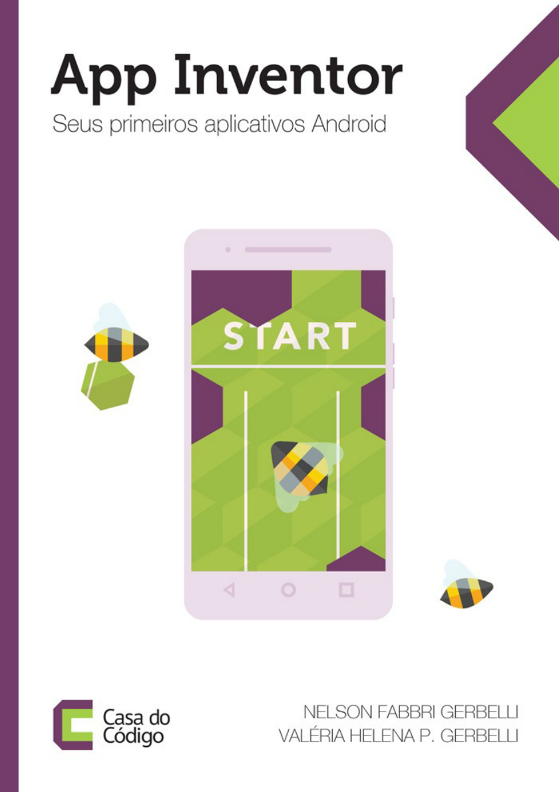
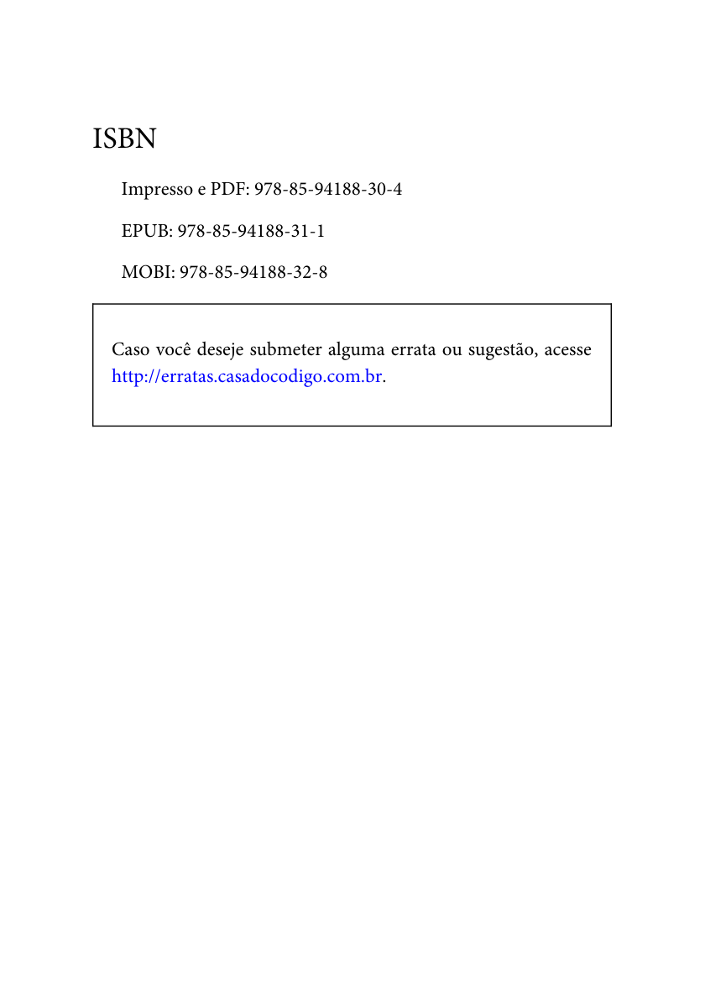
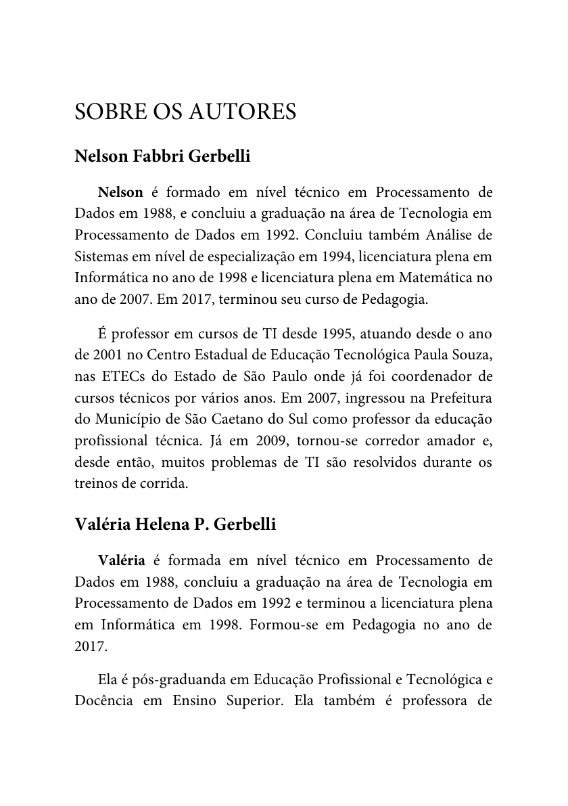
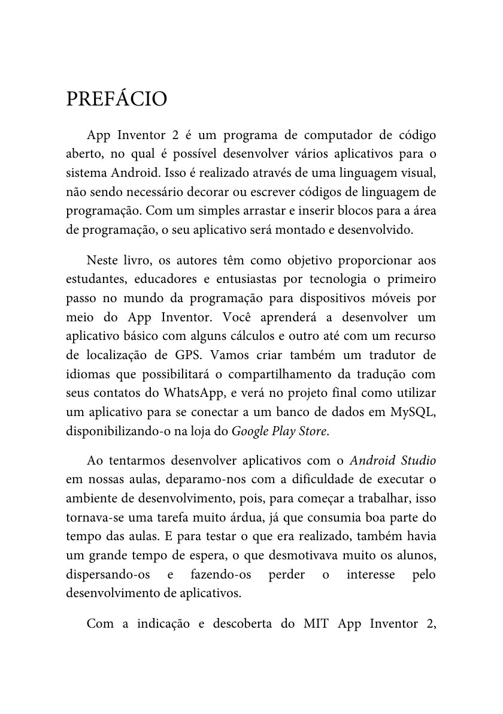

Você vai construir apps no App Inventor para controlar e monitorar soluções IoT (primeiro local e, depois, conectadas).
Navegador atualizado, celular Android/iOS com o MIT AI2 Companion (ou emulador) e conta no App Inventor.
Materiais de apoio utilizados nesta aula:
Caso os links não abram diretamente no navegador, copie e cole o endereço no explorador de arquivos ou abra pelo leitor de PDF.
As imagens a seguir foram extraídas do livro para você reconhecer a ferramenta e se localizar no ambiente.

Figura do livro (p. 1): referência inicial.
Figura do livro (p. 2): visão do conteúdo e contexto.
Dica: deixe o livro aberto em outra janela/dispositivo para consulta rápida de termos e telas, sem interromper sua atividade prática.
Use estas imagens como “mapa”. O objetivo é você aprender a identificar rapidamente onde mexer (Designer) e onde programar (Blocks).

Figura do livro (p. 3): referência para reconhecer áreas da ferramenta.

Figura do livro (p. 4): continuação do mapa visual.
Na prática, o App Inventor trabalha com a ideia de eventos (algo acontece) e ações (o que fazer quando acontece).
Figura do livro (p. 5): exemplo visual para entender eventos e blocos.

Figura do livro (p. 6): continuação do exemplo visual.
Quando você for para IoT, este mesmo padrão será usado para: botão → enviar comando, Clock → ler telemetria, Web → buscar dados, Bluetooth → receber mensagens.
Esta aula usa modo foco:
IoT é quando um dispositivo (sensor/atuador) coleta dados ou executa ações e se integra com um software (app/servidor/nuvem) por meio de uma rede.
Exemplos reais: monitorar temperatura, acionar uma lâmpada, rastrear consumo, enviar alertas.
O App Inventor tem duas áreas principais:
Comece sempre pelo Designer com uma UI simples, depois programe apenas um evento por vez (clicar, mudar texto, registrar valor).
Se algo não funciona, confirme na ordem: componente certo → evento certo → dados certos → resultado visível.
Se o site pedir permissões, aceite. Mantenha o navegador atualizado.
Celular e PC devem estar na mesma rede (Wi‑Fi). Se sua escola bloquear, use cabo ou o emulador.
O emulador é mais lento que o celular. Para sensores, prefira testar no dispositivo real.
Execute com o Companion: ao tocar no botão, o som é reproduzido.
Esse exemplo ensina o padrão “evento → ação”. Em IoT, trocaremos o som por leitura de sensor ou envio de comando.
Para iOS, utilize o Companion. Empacotamento iOS nativo ainda é limitado.
Isso já é um “mini IoT”: o app dispara uma requisição e reage ao retorno.
Em IoT, variáveis viram o seu “painel”: elas mostram o que está acontecendo agora.
Procedimentos deixam seu app robusto e fácil de manter.
Uma lista pode guardar os últimos N valores do sensor para fazer gráfico, média ou detectar picos.
Resultado: o app “lembra” do limite mesmo após fechar.
Por que isso é IoT? Antes de falar com sensores reais, você precisa dominar: interface, estado, validação e registro. IoT é integração, e integração começa pela qualidade do app.
⚠️ Importante: Atividade INDIVIDUAL. Não saia desta tela. Entregue pelo botão de envio.
Você está criando um painel para monitorar um sensor (a leitura será simulada por enquanto). O usuário define um limite e o app registra leituras.
Próximo módulo: você vai integrar o app com um dispositivo via Bluetooth, estabelecendo um padrão de mensagens de controle e telemetria.